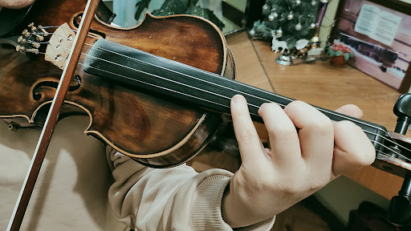
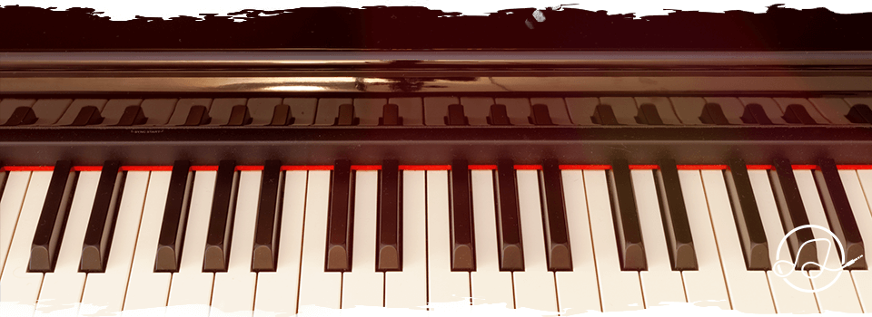
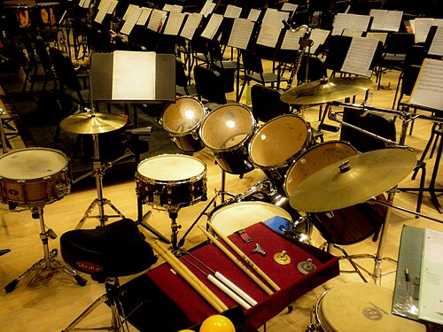
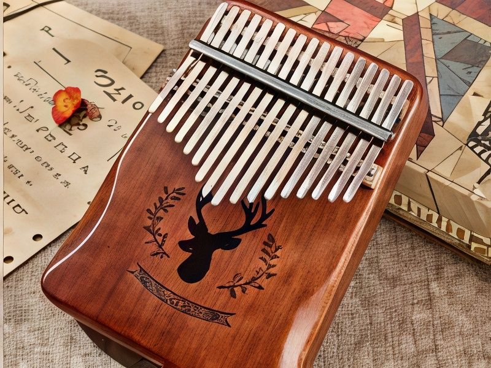
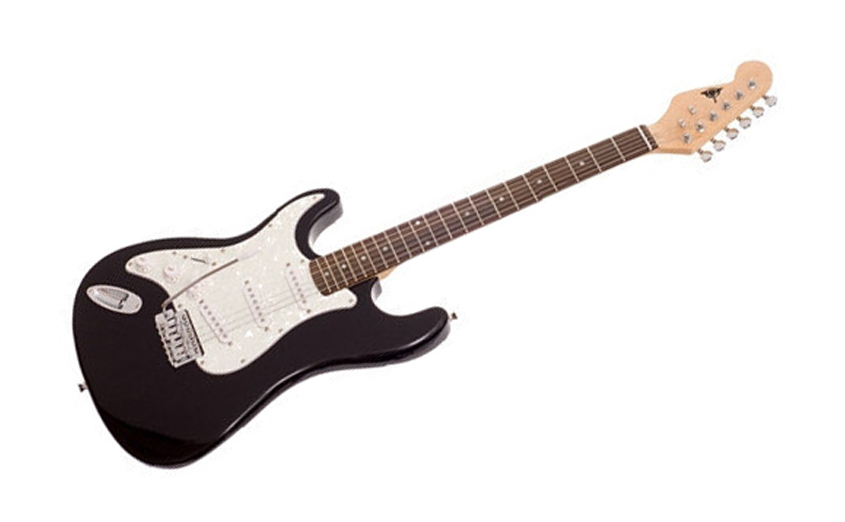

Струнні
Звук створюють вібруючі струни. (скрипка, гітара)

Клавішні
Звук добувається натисканням клавіш. (фортепіано, орган)

Ударні
Звук виникає від ударів. (барабани, тарілки)

Духові
Звук виникає від коливання повітря в трубках. (труба, флейта)

Язичкові
Звук від коливання металевої пластинки. (акордеон, варган)

Електронні
Створюють звук електронними методами. (електрогітара, терменвокс)